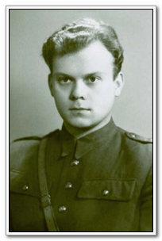
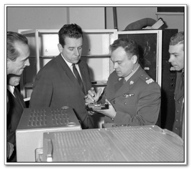
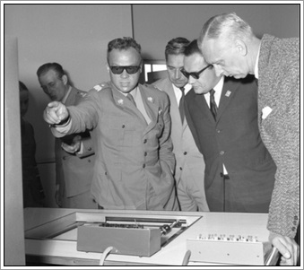
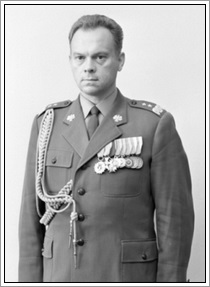
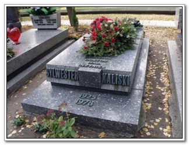

Zespół Szkoł Mechanicznych Elektrycznych i Elektronicznych
w Toruniu
w Toruniu
gen. dyw. prof. dr. hab. inż. Sylwester Kaliski
Nota biograficzna
Sylwester Damazy Kaliski urodził się 19 grudnia 1925 roku w Toruniu w domu przy ulicy Mickiewicza 79 i przez wiele lat tam mieszkał. Sylwester wzrastał w środowisku rodzinnym i wojskowym sprzyjającym rozwojowi cech osobowościowych dających podwaliny osiągania sukcesów życiowych. wszystkie te czynniki nałożyły się na wrodzone predyspozycje i uzdolnienia, co razem wzięte ukrztałtowało osobowość przyszłego najwybitniejszego naukowca XX wieku w dziedzinie fizyki i mechaniki.

Sylwester Kaliski od najmłodszych lat cechował się niesamowitą, tytaniczną wręcz, pracowitością,
wytrwałością w dążeniu do celu, solidnością dokonań, umiejętnością organizowania wokół siebie zespołów i
programowania dla nich zadań oraz propozycji działań, odpowiedzialnością za siebie i innych,
a także terminowością i
punktualnością. Codziennym wysiłkiem budował i umacniał swoją pozycję w rodzinie, szkole i wśród rówieśników.
Sylwester Kaliski do czasu wybuchu II wojny światowej w 1939 roku ukończył sześć klas szkoły powszechnej i jedną klasę gimnazjum w Toruniu. Okupacja hitlerowska sprawiła to, że naukę musiał przerwać, tak jak wszyscy Polacy. Podjął pracę sprzedawcy gazet na ulicach swojego rodzinnego miasta, a następnie pracował fizycznie w zakładzie tapicerskim i przez pewien czas, jako robotnik rolny. W 1940 roku został wywieziony do prac przymusowych w Niemczech, skąd w 1941 roku zbiegł i powrócił do Torunia. W tym czasie związał się z miejscowym ruchem oporu. We wrześniu 1943 roku władze okupacyjne wcieliły go do służby w Kriegsmarine, której nie podjął. Za tę odmowę i próbę ucieczki oraz współpracę z ruchem oporu został, jako 19-letni młodzieniec, aresztowany przez Gestapo 1 lutego 1944 roku i osadzony w więzieniu wojskowym w Toruniu, a następnie w siedzibie Gestapo w Bydgoszczy, gdzie przebywał do pierwszych dni lipca tegoż roku. Jego kolejnym miejscem uwięzienia stał się obóz koncentracyjny w Potulicach, gdzie przebywał do marca 1945 roku. Po zakończeniu wojny Kaliski nie kontynuował nauki szkolnej w systemie instytucjonalnym, lecz podjął pracę, jako mierniczy w Wydziale Reformy Rolnej w Toruniu od 1 maja 1945 roku, a następnie krótko w Milicji Obywatelskiej.
W sierpniu 1945 roku przystąpił natomiast
do eksternistycznego egzaminu maturalnego , który zdał w ówczesnym
Liceum Matematyczno- Fizycznym im. Stefana Żeromskiego w Toruniu. Możliwe było to dzięki,
jego ogromnej ambicji w osiąganie celów kształcenia, nieprzeciętnym uzdolnieniom, niespotykanej
konsekwencji w podążaniu do wyznaczonego celu i niesłychanej pracowitości. 1 września 1945 roku
Sylwester Kaliski został przyjęty na studia na Wydziale Inżynierii Lądowej i Wodnej Politechniki Gdańskiej,
które ukończył w 1949 roku.
W listopadzie 1949 roku, po obronie pracy dyplomowej pod tytułem "Projekt stalowego mostu drogowego", uzyskał kwalifikacje inżyniera budownictwa lądowego i magistra nauk technicznych. Od 1 września 1950 roku do 31 sierpnia 1951 roku był zatrudniony w charakterze starszego asystenta w Katedrze Teorii i Budowy Mostów Stalowych na Wydziale Inżynierii Lądowej Politechniki Gdańskiej.
31 grudnia 1950 roku Kaliski został wcielony do wojska z urzędu i jako szeregowiec skierowany na kurs specjalistyczny przy Centrum Wyszkolenia Służb Kwatermistrzowskich w Poznaniu (2 styczeń - 28 luty 1951 rok). Po jego ukończeniu został awansowany na pierwszy stopień oficerski porucznika i rozpoczął zawodową służbę wojskową.
7 kwietnia 1951 roku został zatrudniony w Wojskowej Akademii Technicznej im. Jarosława Dąbrowskiego w Warszawie na stanowisku pomocnika kierownika Sekcji Programowania i Planowania na Wydziale Wyszkolenia.
Do stolicy przeniósł się Kaliski z Gdańska już z żoną Ireną, którą poślubił 19 sierpnia 1950 roku. Z tego związku 26 września 1954 roku urodził się syn państwa Kaliskich - Wojciech. Równolegle z pracą wykładowcy w Wojkowej Akademii Technicznej sam poszerzał swoją wiedzę studiując na Uniwersytecie Warszawskim fizykę i matematykę. Pracę na Wydziale Wyszkolenia zakończył 17 marca 1952 roku, by od 18 marca do 5 września 1952 roku być zatrudnionym jako inspektor na Wydziale Wyszkolenia Akademii do spraw Fakultetu Uzbrojenia, uzyskując 9 lipca 1952 roku awans do stopnia kapitana.
Od września 1952 roku objął stanowisko zastępcy szefa Katedry Mechaniki Teoretycznej i Wytrzymałości Materiałów, które zajmował do 8 września 1957 roku. W tym okresie, a konkretnie w 1954 roku, Sylwester Kaliski obronił rozprawę doktorską w Wojskowej Akademii Technicznej na temat "Stateczność udarowa pręta". 29 grudnia 1954 roku Kaliski awansowany został do stopnia majora. Sylwester Kaliski swobodnie operował nie tylko językiem rosyjskim, ale również angielskim i niemieckim.
30 września 1957 roku Centralna Komisja Kadr Naukowych przy Polskiej Akademii Nauk zatwierdziła rozprawę, którą Sylwester Kaliski obronił 10 grudnia 1956 roku w Instytucie Podstawowych Problemów Techniki PAN. Była to rozprawa habilitacyjna zatytułowana "Pewne problemy brzegowe dynamicznej teorii sprężystości ciał niesprężystych". Obydwie rozprawy, zarówno doktorska, jak i habilitacyjna miały charakter niejawny, gdyż ich przedmiotem były de facto techniczne zagadnienia konstrukcji rakiet bojowych. Otrzymał za każdą z nich nagrodę Polskiej Akademii Nauk im. M. T. Hubera w 1954 i 1957 roku
W dniu 8 lipca 1957 roku został awansowany do stopnia podpułkownika i objął stanowisko szefa Katedry Teorii Drgań i Dynamiki Konstrukcji w Wojskowej Akademii Technicznej. W tymże roku uzyskał tytuł docenta.

Na stopień pułkownika został Kaliski awansowany 30 czerwca 1960 roku. Wcześniej, bo 30 stycznia tego samego roku przyznano mu tytuł profesora nadzwyczajnego. Zaledwie rok później, 6 kwietnia 1961 roku, ówczesna Rada Państwa na wniosek WAT nadała Sylwestrowi Kaliskiemu tytuł naukowy profesora zwyczajnego. W 1962 roku zostaje również powołany na członka korespondenta Polskiej Akademii Nauk, zaś w 1969 roku był już członkiem rzeczywistym PAN. W roku 1964 Prezes Rady Ministrów powołał profesora Kaliskiego na członka Komitetu Nagród Państwowych oraz członka Prezydium tego komitetu.
Rok 1966 był przełomowy dla Kaliskiego, jeśli chodzi o mianowania na kolejne stopnie kariery wojskowej. Wyszedł bowiem z grupy oficerów starszych i przeszedł do generalicji awansując na stopień generała brygady. Awansował też na płaszczyźnie zawodowej obejmując w tym samym roku, w strukturze WAT, funkcję prorektora do spraw naukowych, by już 4 marca 1967 roku stanąć na czele tej najlepszej wówczas w Polsce uczelni technicznej, jako jej komendant - rektor. Funkcję tę pełnił do 1974 roku.
Minister Obrony Narodowej powierzył mu w 1970 roku wykonanie "Opracowania Prognoz Rozwoju Technicznego Sił Zbrojnych PRL do 1985 roku". Z tego zadania, jak ze wszystkich innych, wywiązał się wzorowo, za co został wyróżniony wpisem do "Honorowej Księgi Czynów Żołnierskich".
W 1972 roku zyskuje na pagonie drugą gwiazdkę awansując na stopień generała dywizji. 4 styczna 1975 roku został zwolniony z zawodowej służby wojskowej i przeniesiony do rezerwy. Będąc naukowcem pierwszej próby nie zasklepiał się tylko we własnej pracy naukowej. Umiał organizować zespoły zadaniowe i stałe jednostki naukowo-badawcze dla realizowania szerokich i wieloaspektowych zagadnień. Był niesłychanym wizjonerem, wyprzedzającym koncepcjami swoje czasy. Był jednak również pragmatykiem umiejącym skalkulować i ocenić formalne możliwości ich realizacji. Dlatego podejmował się pełnienia funkcji i ról społecznych tam gdzie mógł reprezentować świat nauki i jego problemy lub je wręcz rozwiązywać.
Kaliski od 28 stycznia 1959 roku był członkiem ówczesnej wiodącej partii politycznej- Polskiej Zjednoczonej Partii Robotniczej. Nie był klasycznym działaczem partyjnym, a mimo to w 1975 roku został członkiem Komitetu Centralnego PZPR.
Zawsze tak było i jest, że wielkie i ważne idee intelektualne i organizacyjne wymagają zaplecza politycznego, parlamentarnego i akademickiego. Stąd również zaangażowanie prof. Kaliskiego w prace parlamentarne. Był posłem na Sejm PRL VI i VII kadencji w latach 1972 - 1976 i 1976 - 1978, gdzie między innymi przewodniczył Sejmowej Komisji Nauki i Postępu Technicznego.
W latach 1974 - 1978 sprawował urząd ministra nauki, szkolnictwa wyższego i techniki. Sylwester Kaliski tworzył wiedzę techniczną na najwyższym krajowym i światowym poziomie. Chcąc szczegółowo badać i rozwijać jedną z jej dziedzin powołał do życia w 1975 roku Instytut Fizyki Plazmy i Laserowej Mikrosyntezy w Warszawie, którego był pierwszym dyrektorem (równolegle z funkcją ministra NSWiT !). Instytut ten nosi obecnie imię swojego założyciela - Sylwestra Kaliskiego.
Kaliski tworzył i rozwijał wiedzę, ale również chętnie ją przekazywał. Był wytrawnym dydaktykiem, solidnym w przygotowaniu przekazu i surowym oraz sprawiedliwym w egzekwowaniu wiedzy od słuchaczy (studentów, doktorantów).
Największym jego osiągnięciem dydaktycznym było stworzenie unikatowego kierunku studiów w Wojskowej Akademii Technicznej Wydziału - Fizyki Technicznej.
Wykłady i seminaria nie były jedynym sposobem przekazywania wiedzy przez profesora. Drugą istotną formą dzielenia się wiedzą i doświadczeniem były publikacje rozpraw naukowych w wymiarze 550 tytułów, z czego 80 % stanowią indywidualne prace Kaliskiego. Publikatorskiej aktywności ich autora sprzyjało to, że pełnił on funkcje redaktora naczelnego "Biuletynu Wojskowej Akademii Technicznej", "Journal of Technical Physics" oraz "Proceedings of Vibration Problems".
Sylwester Kaliski był autorem wielu ważnych wynalazków, opatentowanych w kraju i za granicą.
W ciągu zaledwie około 30 lat aktywności naukowej, organizacyjnej, wojskowej, urzędniczej i społecznej osiągnął niewyobrażalnie wiele, zdobył kolosalną wiedzę i doświadczenie przyczyniając się do rozwoju polskiej i światowej nauki i praktyki w zakresie wojskowości i gospodarki, a tu głównie w budownictwie, transporcie i przemyśle.
Profesor Kaliski był bowiem uczonym o bardzo rozległych i różnorodnych zainteresowaniach. Będąc wybitnym teoretykiem prowadził samodzielnie, a także z zespołami badania eksperymentalne. Głównymi dziedzinami jego zainteresowania było:
Pierwsze publikacje jeszcze z 1954 roku, które można uznać za początek jego twórczości naukowej, dotyczyły drgania płyt i stateczności płyt podpartych w przęśle o nieciągłych warunkach brzegowych
Kaliski bezsprzecznie jest twórcą podstawowych równań analizy rozpraszania się fal sprężystych i plastycznych w polach magnetycznych.
Niezwykle ważne (zawarte w ponad stu publikacjach) są też prace Kaliskiego z teorii pól sprzężonych magnetosprężystych i termomagnetosprężystych.
Nie można pominąć faktu, że uczony posiada w swoim dorobku naukowym, wraz z zespołem, wynalazek zwany faserem. Urządzenie to podobne w działaniu do lasera jest przyrządem generującym drgania spontaniczne w zakresie kilku MHz. Źródłem wywołującym te drgania jest strumień elektronów w krysztale piezo- półprzewodnikowym. Wynalazek fasera znalazł szerokie zastosowanie w takich dziedzinach wiedzy i praktyki jak: elektronika, automatyka i informatyka.
Sylwester Kaliski w roku 1965 rozpoczął prace nad dziedziną, której był twórcą - elektronofononiki. Początkowym przedmiotem opracowań profesora w ramach tego działu elektroniki było wypracowanie zasad ciągłego wzmacniania powierzchniowych fal piezopółprzewodnikowych i tworzenie rezonatorów idealnych oraz generatorów oscylacji spontanicznych na falach powierzchniowych. Fale takie występują w półprzewodniku o własnościach piezoelektrycznych. Odkrycie to uzyskało patenty w USA, Wielkiej Brytanii i Francji. Profesor Kaliski stworzył w WAT laboratorium pól sprzężonych, w którym wykonano linie aktywnych i pasywnych filtrów do systemów radiolokacyjnych. Opracował też podstawy teorii propagacji fal w ferropółprzewodnikach, głównie fal powierzchniowych. Jest twórcą teorii falowodów piezopółprzewodnikowych.
Kierunkowym przedmiotem zainteresowania generała od 1968 roku stało się współdziałanie silnych, skomprymowanych pól z materią. W 1973 roku, wykorzystując lasery, wytworzył temperaturę kilkudziesięciu milionów Kelwinów. Wywołało to mikrosyntezę termojądrową
Dzięki efektom dociekań eksperymentalnych zespołu kierowanego przez Sylwestra Kaliskiego dotyczących uzyskania generacji neuronów termojądrowych w układzie laser-target, Polska stała się partnerem w dziedzinie badań termojądrowych takich państw jak: ówczesny ZSRR, USA, Francja, Anglia i Japonia.
Sylwester Kaliski w latach siedemdziesiątych rozwinął prace badawcze nad wytwarzaniem plazmy termojądrowej za pomocą urządzeń typu "plasma-fokus" i w układach kombinowanych typu "laser-plasma-fokus".
Najnowszym kierunkiem badań, jakie zainicjował Kaliski była laserowa kompresja plazmy poddanej wstępnej, wybuchowej dekompresji. Byłoby to łączne wykorzystanie w eksperymentach mikrosyntezowych energii klasycznego wybuchu i energii impulsów laserowych. Chodzi o to, żeby wstępnie, za pomocą wybuchu, podnieść gęstość próbki deuterowej i dopiero tak zagęszczoną plazmę oświetlić promieniowaniem laserowym. Metoda ta, zwana mikrosyntezą wybuchową, będąca oryginalną polską drogą do realizacji syntezy jądrowej, polegała więc na inicjacji syntezy bez użycia układów laserowych, a jedynie przy wykorzystaniu nowoczesnych materiałów wybuchowych.
Sylwester Kaliski uległ wypadkowi samochodowemu w sierpniu 1978 roku jadąc na urlop
na trasie Warszawa - Kołobrzeg w miejscowości Wyszewo pod Koszalinem. Zmarł 16 września
1978 roku w Centralnym Szpitalu Klinicznym Wojskowej Akademii Medycznej w Warszawie nie
odzyskawszy przytomności od chwili wypadku.
Został pochowany 19 września 1978 roku na
Cmentarzu Wojkowym na Powązkach w Warszawie.
Sylwester Kaliski za swoje wielorakie dokonania był wielokrotnie nagradzany. Do nagród tych zaliczyć trzeba niezwykle szybkie awansowania go na kolejne stopnie wojskowe. Nagrodami było również imponujące osiąganie kolejnych szczebli kariery naukowej. Wyrazem pozytywnej oceny władz wojskowych było wpisanie generała do "Honorowej Księgi Czynów Żołnierskich". Kaliski był laureatem nagród im. Maksymiliana Tytusa Hubera (w 1954 i 1957 roku). Otrzymał czterokrotnie nagrodę państwową I stopnia (w 1964, 1970, 1974 i 1978 roku). Dwukrotnie nagradzany był także nagrodą ministra obrony narodowej (1958 i 1968). Kaliski uhonorowany został przyznaniem mu tytułów doktora honoris causa Moskiewskiego Uniwersytetu Państwowego im. Łomonosowa i Uniwersytetu Sofijskiego im. Ochridskiego. Dopełnieniem katalogu nagród i wyróżnień jakie otrzymał profesor i generał Kaliski są liczne odznaczenia krajowe i zagraniczne:
Aby uczcić pamięć wielkiego uczonego w mundurze wiele instytucji (w tym szkół), ulic, instytutów naukowych, itp. przyjęło jego imię. Przykładowo są to:
Zespół Szkół Mechanicznych, Elektrycznych i Elektronicznych w Toruniu (podówczas Zespół Szkół Mechaniczno-Elektrycznych) uznał gen. dyw. prof. dr hab. inż. Sylwestra Kaliskiego za swojego patrona.
Aby zmobilizować uczonych, w myśl zalecenia "równaj do najlepszych", do wzmożonego wysiłku intelektualnego i aby uczcić geniusza nauk fizycznych i technicznych - Sylwestra Kaliskiego, zarządzeniem Prezesa Rady Ministrów z dnia 24 lipca 1979 roku ustanowiono nagrodę jego imienia (indywidualną i zbiorową) przyznawaną za wybitne prace naukowe, związane z obronnością kraju i przyczyniające się do rozwoju nauk technicznych oraz fizycznych.


Strony przedmiotowe
Strony tematyczne